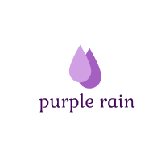

<mat-toolbar color= "primary">

<span class="flex-filler"></span>
<button mat-button color="accent" class="nav-btn" routerLink="/register">Register</button>
<button mat-button color="accent" class="nav-btn"routerLink="/login">Login</button>
</mat-toolbar>